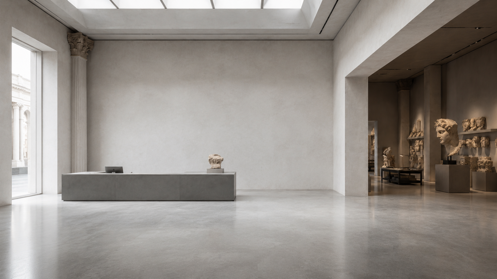

Conservation Portfolio · Madrid
Senior Conservator-Restorer of Cultural Heritage
Specialist in historical plaster casts, sculpture and institutional collections. More than three decades dedicated to conservation, restoration and heritage research.
Sala I
Historical plaster casts, sculpture collections and institutional heritage.
A study of volume, surface and restoration: how institutional casts recover presence without erasing the evidence of time.
Sala II
Painting restoration, mural conservation and institutional collections.
Care of painted surfaces across time — from Renaissance panels to mural ensembles, from private to national institutions.
About
Ángeles Solís Parra is presented not through a chronological CV, but through the clarity of a senior professional practice: conservation of sculpture and historical plaster casts, care for institutional collections, painting restoration, research, teaching and a methodology refined over more than three decades.
"Conservation is a way of reading cultural heritage through matter, evidence and responsibility."
Recognition
2004
Premio Nacional de Conservación y Restauración del Patrimonio Cultural
Ministerio de Cultura · España
2006
Europa Nostra Award
Europa Nostra / European Commission
Prado
Fundación Botín scholarship at Museo Nacional del Prado
Museo Nacional del Prado · Madrid
Anjusil®
Proprietary conservation methodology for historical plaster casts
Independent research · RABASF
Research & Methodology
The development of Anjusil®, the publication of research and the integration of teaching within institutional conservation practice reflect a career committed to the transfer of specialist knowledge.
Anjusil® — Cleaning methodology for historical plaster casts
Developed by Ángeles Solís Parra during the RABASF restoration project and applied in restoration work at the Universidad de Sevilla and MNRA. Connected to the National Award and Europa Nostra recognition.
Material analysis and documentation of historical plaster casts
Development of diagnostic protocols and material testing methods applied across institutional collections in Spain and Europe.
Conservation pedagogy and institutional training
Contribution to the training of conservation professionals through academic institutions and heritage organisations.
Publicaciones
A record of publications and written research connected to Ángeles Solís Parra's conservation practice, drawn from her professional archive.
Publication list to be confirmed with Ángeles Solís Parra.
A curated archive of institutional projects, sculpture, painting, archaeological heritage, private collections, research and teaching — more than three decades of conservation practice.
Complete Archive →Contact
For institutional projects, conservation consultancy, research collaboration or professional correspondence.
Ángeles Solís Parra
Senior Conservator-Restorer of Cultural Heritage · Madrid, Spain